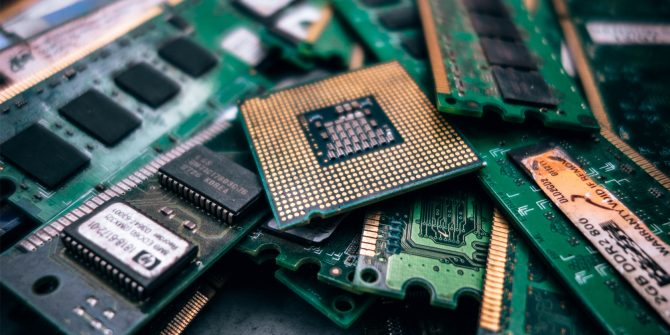

If you want to be successful, you need to follow your passion and not a paycheck. Hi, my name is Sia Gupta and I am a freshman at Dublin High School. One of the many things I like to do is code websites and my career goal is to become a software engineer at a big tech company. Something that inspired me to try to become a software engineer is my extreme passion in learning what types of programs and code runs a computer. Computers are now an extremely crucial part to our world today, and I think I can be a valuable asset in this field.

I will be a valuable asset as I am passionate about my work. Because I love what I do, I have a steady source of motivation that drives me to do my best. In my last job, this passion led me to challenge myself daily and learn new skills that helped me to do better work. For example, I taught myself how to use Photoshop to improve the quality of our photos and graphics. I soon became the go-to person for any design needs.I’m a people-person. I love meeting new people and learning about their lives and their backgrounds. I can almost always find common ground with strangers, and I like making people feel comfortable in my presence. I find this skill is especially helpful when kicking off projects with new clients.
Currently I am taking Computer Science Principles and I have made 3 projects. Beyond taking this class, I have coded dozens of websites using HTML and CSS. One Project that I used my skill for is My Book Drive to Malawi. I coded multiple websites to inform people on the importance of their help, and to ask for help using forms and digital fund. I have skills also in Python and Javascript. I am currently helping senior citizens find their way around a digital library called Libby.